Before you begin
- Complete ACP 1.
Starting point
??? · Qufim Island · G-6
Era note: 2009 level-75-era add-on. Modern retail shortcuts and item-level solo claims are not assumed on Zenith.
Walkthrough
- Obtain a Seedspall Astrum from Yagudo in Meriphataud Mountains, near the Castle Oztroja approach at K-8.
- Obtain a Seedspall Luna from Quadav in Pashhow Marshlands, near the Beadeaux approach at K-10.
- Obtain a Seedspall Lux from Orcs in Jugner Forest, near the Davoi approach at G-11.
- Bring all three physical items to Qufim Island. Trade them together to the ??? at G-6 between the two stone pillars near the H-6 path, then watch the scene.
Completion and reward
Story progression.
What this opens
- ACP 3
Area maps
Open a zone below, then select a map to enlarge it. Match the named floors and grid coordinates in the steps; these are reference area maps, not a live position tracker.
Qufim Island


Meriphataud Mountains


Pashhow Marshlands

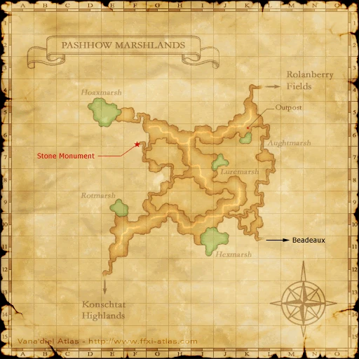

Jugner Forest


Castle Oztroja

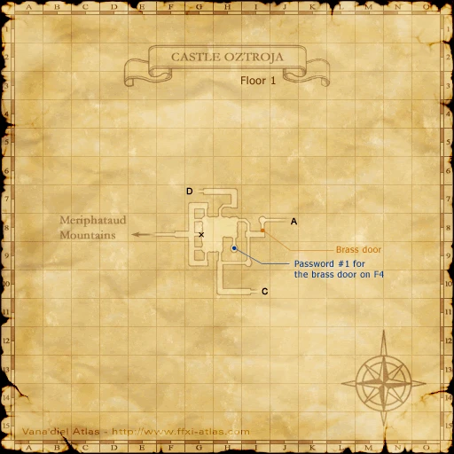


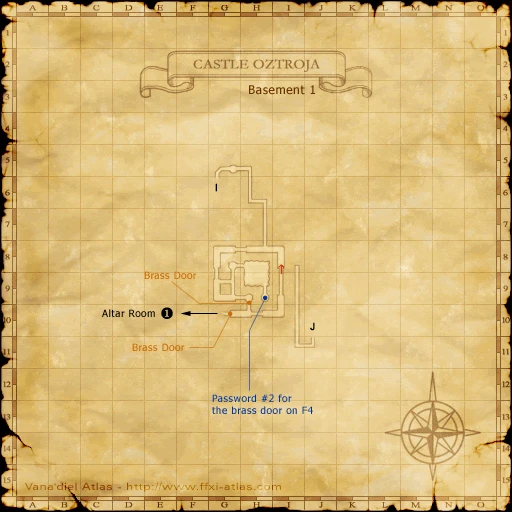


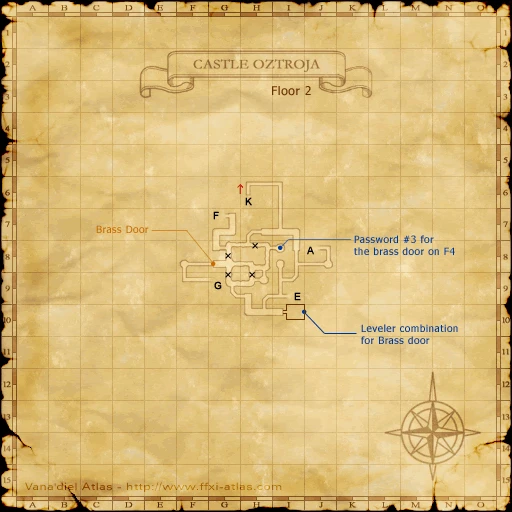


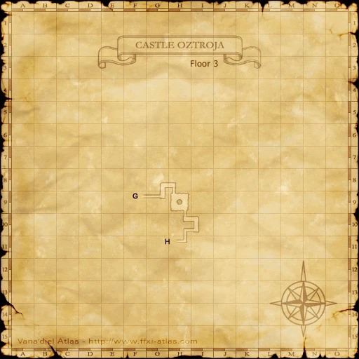


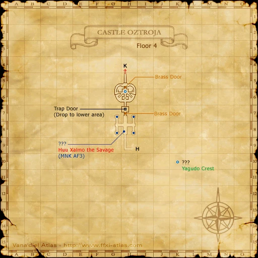


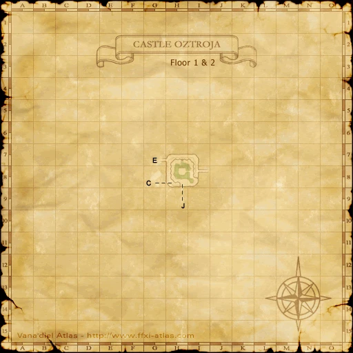


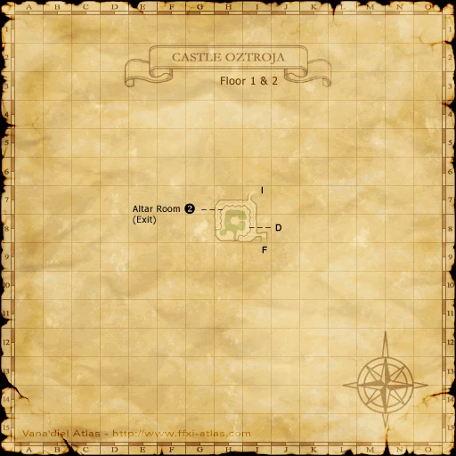

Beadeaux

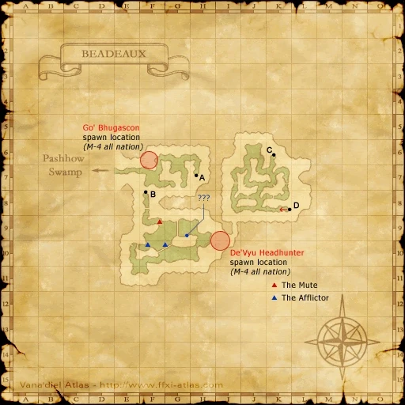


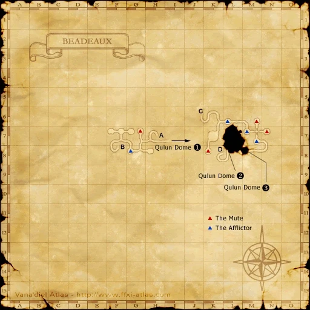

Davoi

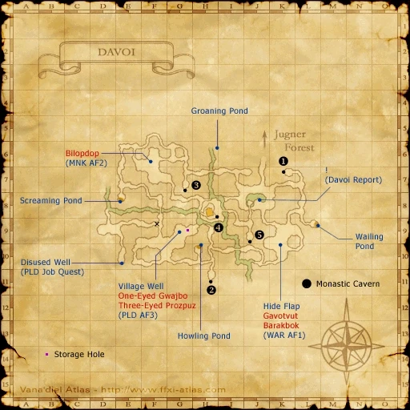

Zone guides
References
Steps are an original summary of the linked walkthrough and reviewed source. Other servers’ bonus rewards are not included. How to read requirements, waits and battlefield notes.